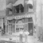
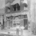

Currently: Antique
The oldest building in the commercial area is the painted brick building across the street from where you are standing (Southeast corner of First and First). It was originally a three story building constructed in 1856. In 1957, there was a disastrous fire and the third floor was removed. Throughout its history, it has been a hotel, a community meeting place, and the home of some fraternal organizations. We know it was remodeled in 1891. When Iowa Electric opened the Inter Urban Street Railroad around 1914, it bought the building as its office for both tickets and electrical needs. The building is constructed of locally made brick. Note the large round disks on the west wall. These "tie rods" are at the end of iron rods that help strengthen the building.
Currently: Lee's Town and Country Real Estate.
Across the street, kitty-corner from the Olliver Day Building, is Lee's Town and Country Real Estate. As you can see, it once was covered by a metal facade, but just recently, the façade was removed for restoration. It is probably the second building on the site known as the Waln corner. Waln was one of the earliest settlers and founding fathers of the town and Cornell College. He was a very distinguished gentleman who had a great deal to do with the history of this building. The building, like the last, is constructed of local brick. Our research indicates that the Waln Building was constructed in 1881.
Currently: Big Creek Market
This wood framed commercial hotel was built by E.D. Waln in 1849. It was, in fact, probably the first commercial hotel. It burned in 1868. A year after the fire, Henry Gillett built a hotel here and it is probably the shell of this current building. W. E. Platner owned the building in the late 1870's and then used it to operate his hardware store around 1878 (Platner Hardware and Tin Shop). It may well have been Platner who "modernized" the building by adding the cornice and window hoods, both of which are made of pressed tin. These additions were rather characteristic of small town store styles in the 1880's. (Remember, Platner was in the tin business.)
Tie rods were usually found between the first and second floors, between the second and third floors, or between the second floor and the top of the building. The top of the Big Creek Market building is much more finished. Look just below the roof line at the top and you'll see the little brick dentils that give the building a sense of completion. Such decoration is not on the top of the building across the street because the third floor was removed. You'll also notice a large area filled in with new brick and glass block that was once a bay window overlooking the street. The window could provide light into what might have been the hotel sitting room or apartment. It was also a wonderful place to watch the traffic on the Military Road.
Currently: Juniors
This building was designed and built by a Cedar Rapids architecture firm, the rather well known firm of Joselyn & Taylor. All of the stylistic features you see in this building are repeated some place or another up and down the street here. This comes to us from 1894 and was built following the serious 1893 fire that destroyed several buildings in this area. The Drs. Wolfe and Mr. Ellison funded this merchant block. The former wood structure was known as the Smith-Hogel Block. Following the great fire, Smith and Hogel went up the street westward and built a similar brick building at 109.
Notice how the brick is laid so it creates arches that accentuate the top of the building and decorate the large brick wall. Also we see some of the capstones that were originally on these buildings and since removed.
This structure illustrates a commercial form called a merchant block. A merchant block consists of two or more stores under one roof with their second floors acting as a continuation of the building. You'll see more of these blocks just up the street. This is a wonderful example of 19th Century merchandising and building.
Note the large plate glass windows. If you look at the doorway in the middle of the structure, you'll notice steel foot plates. You can see the pressed tin work above the window line with the decorative pieces painted on the right. If you look at the end of those pressed tin pieces you see they are hiding a steel beam.
The downtown area, the one block that we will be walking along, was built generally between 1888 and 1904. The economy was rather good and the disastrous fires of 1893-94 created the opportunity for new brick (fireproof) buildings.
This building demonstrates the wonderful 19th Century concept of merchandising. At the time, people did not rely on newspapers, radio or television. Instead, they relied on window-shopping. Note the door is recessed considerably from the outside of the building providing some protection on a rainy day. This was a great merchandising technique because when you look inside you automatically feel drawn to the inside of the store.
The windows above are trimmed and the cornice at the very top of the building is trimmed in pressed tin. They may look like limestone, but if you notice carefully where they begin to weather and where the paint peels, you can tell they are really tin. The pressed tin was a commonly used material because it was light and could be tacked to the framework around the windows. It also could dramatically update and change the building from a very plain brick building such as the ones across the street into a very lovely modern building for the 1890's and turn of the century.
Currently: Michael Allan Jewely Design
Dale Sergeants Accounting Practice has an obviously modern building facade. Behind this facade may well be part of the Gillette Hotel from 1869. More historical research needs to be done, but we know Gillette's name appears on the abstract by 1869.
Currently: Farm and Home Realty
The next building is a red brick structure again with the wonderful "shopping windows" as we will call them. The door is recessed in the front. This structure is not made of soft locally made brick but modern hard brick indicating it probably came by train. The railroad came through the town in about 1858, and by the 1880's, a bridge over the Mississippi River in Clinton, linked Mount Vernon with the rest of the world, which at that time meant New York and San Francisco. This hard brick can be molded and baked and is not only rectangular in shape. Brick of this molded type is often called terra cotta brick. The brick is set in very narrow mortar and you will notice that the mortar is also colored, which is another phenomena of the 1890's. Frank Lloyd Wright, especially in his Robie House in Chicago, used the colored mortar extensively.
The "shopping windows" are large and inviting. If you look above them you can see wooden panels hiding upper smaller glass windows. Above the panels is a pressed tin piece that covers a steel beam. The garlands with the design pieces on each end have been painted in a copper color to accentuate this very important part of the building. Looking just above the copper banded pressed tin piece you can see the use of molded brick in the shape of eggs all across the building, underneath the limestone. When the egg is used with an extra piece of molding it is called egg and dart and is found extensively as a decoration inside and out. The limestone pieces used above and below the windows are called lentils.
The large opening has been reduced in size by metallic siding and small windows. Those were originally full glass windows letting in considerable natural light on the second floor. A local Civil War hero and attorney named Captain Charles Kepler built this building in 1892. His law office was on the second floor. He rented the first floor to merchants, the first being H. D. Butterfield Dry Goods. The large glass area was needed to provide light for reading law books. Above the limestone we see more red terra cotta-style floral patterns and on the freize there is a more delicate designed terra cotta. There are about 4 or 5 different brick designs on this facade, and when combined with the massive limestone, they give this building a unique character compared to the other buildings in the town.
Notice under the large first floor windows there is a cement sill. On the corners, the brick is laid to accommodate this interesting angle of the entry. Now while you are looking down, look at the wonderful cast iron grate piece (or door plate) in front of the doorway to 104. These were very popular among merchants as they served as mud scrapers. When walking across the mud scrapers some of the mud and manure from the barnyard fell off the boots of customers and kept the store cleaner. Some of these first store floors had oiled floors for the same purpose. The entrance into the second floor of this building is through the door marked 104. The hallway originally had a much bigger window in order to permit sunlight to brighten the dark hall in the era before electricity. You will notice that at the west edge of the building the bricks are rounded. This is a very unusual pattern for this town. Not only is there the pink mortar, but also the rounded corner bricks. Molded clay baked under high temperatures and could be made into many different shapes.
Currently: Pizza Palace and Dentist
Stores 106 and 108 burned in December 1996. The original store was called the Humbolt Block and built around 1860. The facade of this building was reconstructed from photographic evidence. At the time of the fire, the facade was covered with metal siding, which obscured the simple brickwork. In the reconstruction, about 8 feet were added to the height to stabilize the two surrounding buildings. By continuing the brick pattern of the lower original section on the added feet, a rather nice integration was achieved and the historical character remained. The front windows were larger in the original building (like those to the east) and where you see wooden panels under the front windows you would have seen more glass to let light into the basement.
Currently: Home Horizons, Taikwondo Center
We know that the first Mt Vernon newspaper published by S.N. Bauman was printed in this building for many years. The building you see here comes from 1904, about the same time as the Bauman Clothing Store on the corner. However, while a distinctive red brick is used on the Kepler building, here was an unusual (for Mt. Vernon) brown or rusty colored brick. Noting this, the influence of the railroad and a new awareness of materials and styles become very obvious.
Notice again the thin mortar used here (on the edges and above) and the steal beam above the large plate glass windows. Here, instead of being covered by a copper or pressed tin piece, the beam is exposed. Floral medallions are then bolted onto the beam. If you look on up you'll notice arched windows or Romanesque windows. This type of window is used often in this district. In the center of the building is a brick column that ends just below the windows. But, by recessing three bricks back we have a decorative arrangement here. At the top, the overhanging brick forms an extension that gives this building a very distinctive elaboration. Notice the bricks set on edge just below the corners or dentals all across the top. While brick may seem monotonous at times, by raising brick over a straight wall you can create a sense of decoration, texture and depth. Here we have a great deal of imagination used in a brick pattern.
The Clark & Hayzlett Building built in 1869 has been modified many times. At one time, this area of the street was called a Mammoth Block and whatever was here burned in 1867. Hayzlett and Clark built here in 1869 but the brick facade was added later after a fire, perhaps as late as the early 1900's. It was in the style of the merchant block with an entry in the middle of the building and a recessed doorway much like the Kepler Building. The current first floor appearance is from the 1970's and early 1980's. One of the owners brought (??) the two stores to the west, and by using this new brick façade, tried to tie the three structures together at the first floor. The second floor of this building served as a community auditorium but has been the home of the Masonic Order since 1915. This was really a very gorgeous building and used to have a large beautiful overhang with brackets and a large cornice which have been removed (see Centennial Book between pages104 & 105 - Wilcox Hall). One of the important details left concerns the vertical row of coins at the corner of the front and side facades. This is a very large structure and the loss of its historic details is really a tragedy.
If you let your eye travel up the building you will notice that there are really two brick styles here. This was another store built by the Wolfe Brothers. This original building comes from 1894. It had a beautiful limestone capping on the top. It has had many uses historically, including a post office.
Currently: The Flower Stall
You will see an older brick structure near the top. This could be from the original building which was built around 1870. The building to your left is a much more modern structure with textured brick. The building uses the recessed door with the large "shopping windows" which were undoubtedly part of the original structure. The building has obviously undergone many modifications. Our research indicates it was funded by C.W. Kepler and built by W.W. Dean in 1870. It housed Mt. Vernon's first bank.
Currently: Kudart Law Offices
The Kudart office (120-22) was built in 1871 as a storeroom for Isaac Wilcox. T. S. Brokaw, who served as Postmaster, occupied the building for some years.
Currently: Bauman's Clothing
The next building has a cornerstone from 1904. This is the Bauman's Clothing Store Building built by the International Order of Odd Fellows. If you stand in front of the door and look to your left you'll see the door which leads to a large stairway going up to the lodge meeting room on the second floor. Again, we have the exposed steel beam that is holding the building up and decorated medallions in floral pattern. At one point between each of these floral medallions was a letter to spell out Bauman's in gold leaf. This building is truly a treasure because it is practically untouched from 1904. It bears the name of the Odd Fellows Organization on the corner near the top. The first floor occupants of this building, Rood and Young, went into bankruptcy in 1909. The present clothing store, Bauman's, took over in 1910. This is the oldest continuous merchant business in the community. The posts holding up the beam are cast iron. These are the original shape and dimensions of the windows. Notice the enormous transom window over the door. This is all original. If you can take the time, I suggest that you go inside where you can see the clothes racks that pull out from the wall, all the cases of a bygone era on display, and in the back, the high balcony where the manager could sit and watch the front door or observe his employees at work. The building also has a full basement that has housed barbers, tailors and craftsmen through the years. Now, it is now simply a wonderful place to come and have coffee every workday with retired persons in the town, as well as the young merchants.
The bank directors made a conscience effort to try to make the building fit into the architectural flavor and ambiance of the town. They did so at a considerable expense for which the town is very grateful. The use of limestone bands and the hint of a mansard roof are examples of this. Up the street one block are two mansard roofs. There is one on Guild Hall and one across the street on the Morgan Funeral Home. Thus, the building serves as a small transition from the usual two- story, minimal decoration merchant structures, to the more elegant domestic structures. Guild Hall was built as a hotel and Morgan Funeral Home as a doctor's office and hospital--again commercial structures.
Currently: Rainbow Beads, Mt. Vernon Tattoo
This building is almost completely reconstructed. The building on the corner was a lovely building with a high parapet with lovely pressed tin designs and finials across the top. About the only piece that remains from that original structure is the overhanging bay window. It bares very little resemblance to the original. Perhaps the elevated entrance and bay window are all of the front facade that remain. The Centennial Book has a good picture of both the original Bauman home and the large store addition to the front with its vertical lines (see pictures p.210, between pp. 96 & 97, and between 105 & 105). What appears as stone is an imitation covering. Look at the west wall and see if you can trace the additions and modifications.
Currently: Treasures and Interiors Antiques, Chameleon's Pub and Grub
The next building to the east shows the effort by a property owner to create a 19th century storefront. It was done by a local architect, Edward Sauter. Sauter, after a great deal of research on Iowa small towns merchant buildings, designed this front. Features and designs were selected to reflect the look and historic character of the small town and appropriate to the Mt. Vernon streetscape. The Morrissey building is joined to the building at the right, which is now Chameleon's Pub and Grub. If the facade from upper part was removed, the original style of the building could be observed. This was a merchant block--two stores with a second floor entry up the middle. The East portion of the building is original and may reflect the original structure from 1894. However, the brick on the west portion was so badly deteriorated that this new facade was necessary. We are not sure about the condition of the brick behind the current covering of the east side.


Currently: Silver Spider, Lincoln Cafe
Now as we move to the East we come to the only one-story building in the Commercial District (117-115). It is again a merchant block--two joined stores. The Wolfe Brothers, consisting of a doctor and dentist, built this building, as well as the Randall's Tavern Building and the one across the street. It dates from 1894 and first housed a barber shop and restaurant. As far as we can tell, the building is literally untouched. If you look at the upper parts, you will notice that most of it is pressed tin.
 
Currently: Sauter Baty / Associates
This building is one of our pride and joys. At the top we see "Bank 1891." It was originally the Collins Bank but quickly became the Charles Brackett Store. It was built in 1891. Collins died in 1892 and Brackett, who was a prominent builder of many homes in town bought, the building. The former editor and owner of the Sun newspaper purchased this building, and from photographic evidence, you are essentially seeing the original building. Fortunately, in the basement of this building, he found large colored glass transom windows that had been above each of the doors on the first floor and the original arch-colored glass that never left the building. You will notice a very smooth brick, a large arch over the front window, and the narrow mortar. This building is banded with limestone and along the top are lovely little arches that decorate the top. This building had a stair step series of limestone blocks up to a single capstone on the top. Most of the buildings in this historic district had the same style of caps that give a sense of verticality. Today the streetscape is much more horizontal because these caps are gone. Most were removed because they were not maintained and there was fear they would fall on pedestrians. When the building is open, please go in and see what a lovely job has been done on the interior. There are apartments on the second floor. You will notice on the Sauter building long narrow windows that are mostly all in their original shape, preserving historical integrity. Notice just above the limestone footings, tie rod ends in the shape of an S--this is another practical, yet decorative design.

Once the Smith-Hogle Building of 1894 109 was part of a rebuilding after disastrous fires in the downtown area in 1893-94. It also is a merchant block and you will notice the entrance in the middle again where you are under a roof and can window shop. This is all now one store and is much like the Randall's Tavern. It also has a door in one corner at a 45 degree angle so that you enter the building not from the front directly, but from the angled corner which is a feature used here and at Randall's Tavern. This building bears a great deal of similarity to the other buildings along the street in the way it uses brick and the use of the brick column that seems to go nowhere. The wood above these large windows is simply covering the lovely full-glass windows that are an effort to get light in the building.
Currently: Mott Insurance Agency
The next building (107) has some resemblance to the one across the street - the Kepler Building. Underneath the large window on the second floor are the rounded brick. If you go across the street and look at this you will see the use of very large amounts of limestone, varieties of the arch shape, and tubular shaped terra cotta bricks. The top of this building would have had three or more limestone blocks leading to a cap. This building was very much in tact when recently purchased and restored very close to the original. It is a building of great integrity. It is a remarkable reflection of the spirit of 1891 when it was built. It was built for the Mt.Vernon Bank, largely owned by William Smith and Dr. Charles Carson who first occupied it. It is regarded as one of our finest landmarks.

105 was built as a Post Office for T. S. Brokaw in 1888 by Rood and Young, also merchants on Main Street. This building is best seen in the fall when the leaves are not hiding its appearance. There is an enormous amount of brick detailing as well as terra cotta and a pressed tin piece that looks like a scroll at one end. You will notice other places that look like stone, but may be brick. Just above the metal flashing we have wood cornices that duplicate pressed-tin pieces.

Currently: Lee's Town and Country Real Estate Office
We have a lot the trees hiding the charm of the building, but as you look at the corner building, starting at the top, you'll notice a great deal of pressed-tin that reaches across the two buildings which really indicates that it was built as one. The pressed tin on the left has been painted to accentuate its Victorian detailing. The hoods over the windows are like the hoods of the windows of the building that you are standing in front of--the Big Creek Market Building, which are pressed tin with limestone sills on the windows. A line of bricks used as dentals or small little brackets are across the front.
We are looking at another merchant block here. The building to the left (west) is identical to the one on the right (east), except there are three openings instead of four. Together, or as a whole structure, it is a very imposing and lovely building and it is a major project to convince the owner to take the covering materials on the east side away so we could expose those lovely window hoods and bricks. We could have a really dramatic corner that would tie this entire corner block together.